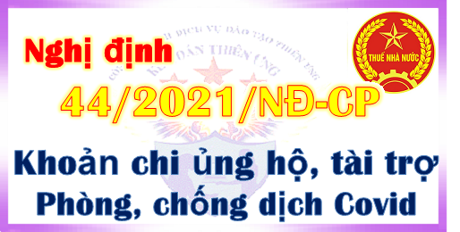

Ngày 31/03/2021 Chính phủ ban hành Nghị định 44/2021/NĐ-CP Hướng dẫn khoản chi ủng hộ, tài trợ phòng chống dịch Covid-19 chi phí được trừ khi tính thuế TNDN.

-----------------------------------------------------------------------------
|
CHÍNH PHỦ ------- |
CỘNG HÒA XÃ HỘI CHỦ NGHĨA VIỆT NAM Độc lập - Tự do - Hạnh phúc --------------- |
| Số: 44/2021/NĐ-CP | Hà Nội, ngày 31 tháng 3 năm 2021 |
NGHỊ ĐỊNH
HƯỚNG DẪN THỰC HIỆN VỀ CHI PHÍ ĐƯỢC TRỪ KHI XÁC ĐỊNH THU NHẬP CHỊU THUẾ THU NHẬP DOANH NGHIỆP ĐỐI VỚI KHOẢN CHI ỦNG HỘ, TÀI TRỢ CỦA DOANH NGHIỆP, TỔ CHỨC CHO CÁC HOẠT ĐỘNG PHÒNG, CHỐNG DỊCH COVID-19
Căn cứ Luật Thuế thu nhập doanh nghiệp ngày 03 tháng 6 năm 2008; Luật sửa đổi, bổ sung một số điều của Luật Thuế thu nhập doanh nghiệp ngày 19 tháng 6 năm 2013; Luật sửa đổi, bổ sung một số điều của các Luật về thuế ngày 26 tháng 11 năm 2014;
Căn cứ Luật Quản lý thuế ngày 13 tháng 6 năm 2019;
Căn cứ Nghị quyết ngày 12 tháng 11 năm 2020 của Quốc hội về dự toán ngân sách nhà nước năm 2021;
Theo đề nghị của Bộ trưởng Bộ Tài chính;
Chính phủ ban hành Nghị định hướng dẫn thực hiện về chi phí được trừ khi xác định thu nhập chịu thuế thu nhập doanh nghiệp đối với khoản chi ủng hộ, tài trợ của doanh nghiệp, tổ chức cho các hoạt động phòng, chống dịch Covid-19 theo quy định tại khoản 8 Điều 3 Nghị quyết ngày 12 tháng 11 năm 2020 của Quốc hội về dự toán ngân sách nhà nước năm 2021.
Điều 1. Đối tượng, phạm vi áp dụng
Nghị định này áp dụng đối với tổ chức, doanh nghiệp (sau đây gọi chung là doanh nghiệp) là người nộp thuế thu nhập doanh nghiệp theo quy định của Luật Thuế thu nhập doanh nghiệp, có khoản chi ủng hộ, tài trợ cho các hoạt động phòng, chống dịch Covid-19 tại Việt Nam.
Điều 2. Chi phí được trừ khi xác định thu nhập chịu thuế thu nhập doanh nghiệp
1. Doanh nghiệp được tính vào chi phí được trừ khi xác định thu nhập chịu thuế thu nhập doanh nghiệp đối với khoản chi ủng hộ, tài trợ bằng tiền, hiện vật cho các hoạt động phòng, chống dịch Covid-19 tại Việt Nam thông qua các đơn vị nhận ủng hộ, tài trợ quy định tại khoản 2 Điều này.
2. Đơn vị nhận ủng hộ, tài trợ bao gồm: Ủy ban Mặt trận Tổ quốc Việt Nam các cấp; cơ sở y tế; đơn vị lực lượng vũ trang; đơn vị, tổ chức được cơ quan nhà nước có thẩm quyền giao nhiệm vụ làm cơ sở cách ly tập trung; cơ sở giáo dục; cơ quan báo chí; các Bộ, cơ quan ngang Bộ, cơ quan thuộc Chính phủ; tổ chức đảng, đoàn thanh niên, công đoàn các cấp ở trung ương và địa phương; cơ quan, đơn vị chính quyền địa phương các cấp có chức năng huy động tài trợ; Quỹ phòng, chống dịch Covid-19 các cấp; Cổng thông tin điện tử nhân đạo quốc gia; quỹ từ thiện, nhân đạo và tổ chức có chức năng huy động tài trợ được thành lập, hoạt động theo quy định của pháp luật.
Các đơn vị nhận ủng hộ, tài trợ có trách nhiệm sử dụng, phân phối đúng mục đích của khoản ủng hộ, tài trợ cho các hoạt động phòng, chống dịch Covid-19 đã tiếp nhận.
3. Hồ sơ xác định khoản chi ủng hộ, tài trợ gồm có: Biên bản xác nhận ủng hộ, tài trợ theo mẫu ban hành kèm theo Nghị định này hoặc văn bản, tài liệu (hình thức giấy hoặc điện từ) xác nhận khoản chi ủng hộ, tài trợ có chữ ký, đóng dấu của người đại diện doanh nghiệp là bên ủng hộ, tài trợ và đại diện của đơn vị nhận ủng hộ, tài trợ; kèm theo hóa đơn, chứng từ hợp pháp theo quy định của pháp luật của khoản ủng hộ, tài trợ bằng tiền hoặc hiện vật.
Điều 3. Hiệu lực thi hành và tổ chức thực hiện
1. Nghị định này có hiệu lực thi hành kể từ ngày ký và áp dụng cho kỳ tính thuế thu nhập doanh nghiệp năm 2020 và năm 2021.
2. Trong quá trình thực hiện nếu phát sinh vướng mắc giao Bộ Tài chính hướng dẫn, giải quyết.
3. Các Bộ trưởng, Thủ trưởng cơ quan ngang Bộ, Thủ trưởng cơ quan thuộc Chính phủ, Chủ tịch Ủy ban nhân dân tỉnh, thành phố trực thuộc Trung ương và các doanh nghiệp, tổ chức có liên quan chịu trách nhiệm thi hành Nghị định này./.
|
Nơi nhận: - Ban Bí thư Trung ương Dâng; - Thủ tướng, các Phó Thủ tướng Chính phủ; - Các bộ, cơ quan ngang bộ, cơ quan thuộc Chính phủ; - HĐND, UBND các tỉnh, thành phố trực thuộc trung ương; - Văn phòng Trung ương và các Ban của Đảng; - Văn phòng Tổng Bí thư; - Văn phòng Chủ tịch nước; - Hội đồng Dân tộc và các Ủy ban của Quốc hội; - Văn phòng Quốc hội; - Tòa án nhân dân tối cao; - Viện kiểm sát nhân dân tối cao; - Kiểm toán Nhà nước; - Ủy ban Giám sát tài chính Quốc gia; - Ngân hàng Chính sách xã hội; - Ngân hàng Phát triển Việt Nam; - Ủy ban Trung ương Mặt trận Tổ quốc Việt Nam; - Cơ quan trung ương của các đoàn thể; - VPCP: BTCN, các PCN, Trợ lý TTg, TGĐ Cổng TTĐT, các Vụ, Cục, đơn vị trực thuộc, Công báo; - Lưu: VT. KTTH(2b). |
TM. CHÍNH PHỦ THỦ TƯỚNG Nguyễn Xuân Phúc |
---------------------------------------------------------------
PHỤ LỤC
(Kèm theo Nghị định số 44/2021/NĐ-CP ngày 31 tháng 3 năm 2021 của Chính phủ)
CỘNG HÒA XÃ HỘI CHỦ NGHĨA VIỆT NAM
Độc lập - Tự do - Hạnh phúc
---------------
BIÊN BẢN XÁC NHẬN ỦNG HỘ, TÀI TRỢ CHO CÁC HOẠT ĐỘNG PHÒNG, CHỐNG DỊCH COVID-19
Chúng tôi gồm có:(Kèm theo Nghị định số 44/2021/NĐ-CP ngày 31 tháng 3 năm 2021 của Chính phủ)
CỘNG HÒA XÃ HỘI CHỦ NGHĨA VIỆT NAM
Độc lập - Tự do - Hạnh phúc
---------------
BIÊN BẢN XÁC NHẬN ỦNG HỘ, TÀI TRỢ CHO CÁC HOẠT ĐỘNG PHÒNG, CHỐNG DỊCH COVID-19
Tên doanh nghiệp (bên đơn vị ủng hộ, tài trợ):
Địa chỉ: Số điện thoại:
Mã số thuế:
Tên đơn vị nhận ủng hộ, tài trợ:
Địa chỉ: Số điện thoại:
Mã số thuế (nếu có):
Cùng xác nhận [tên doanh nghiệp] đã ủng hộ, tài trợ cho [tên đơn vị nhận ủng hộ, tài trợ]:
- Tài trợ bằng hiện vật □
- Tài trợ bằng tiền □
Với tổng giá trị của khoản ủng hộ, tài trợ là………..
Bằng tiền:…………
Hiện vật:…………… quy ra trị giá VND:…………………
Giấy tờ có giá………… quy ra trị giá VND……………………
(kèm theo hóa đơn, chứng từ hợp pháp theo quy định của pháp luật của khoản ủng hộ, tài trợ bằng tiền hoặc hiện vật).
[Tên đơn vị nhận ủng hộ, tài trợ] cam kết sử dụng đúng mục đích của khoản ủng hộ, tài trợ. Trường hợp sử dụng sai mục đích, đơn vị nhận ủng hộ, tài trợ xin chịu trách nhiệm trước pháp luật.
Biên bản này được lập vào hồi ... tại…………… ngày 15 tháng 09 năm 2026 và được lập thành… bản như nhau, mỗi bên giữ 01 bản.
|
Đơn vị nhận ủng hộ, tài trợ (ký tên, đóng dấu) |
Đơn vị ủng hộ, tài trợ (ký tên, đóng dấu) |
------------------------------------------------------------------------